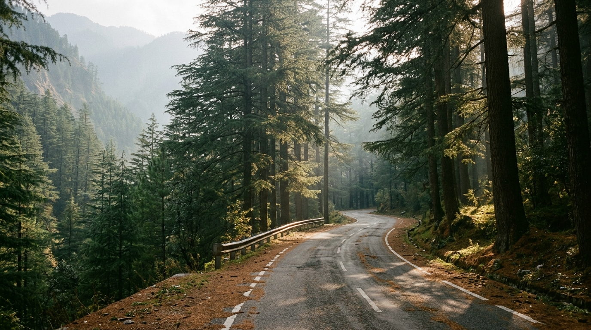
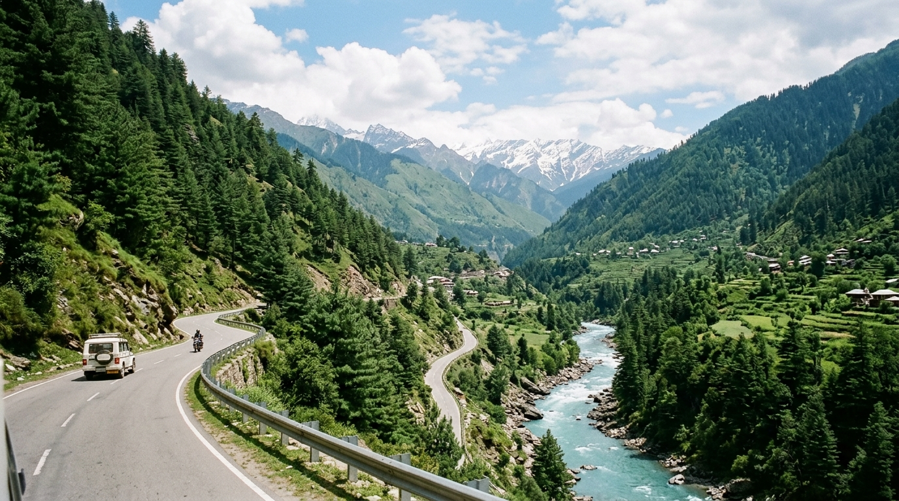
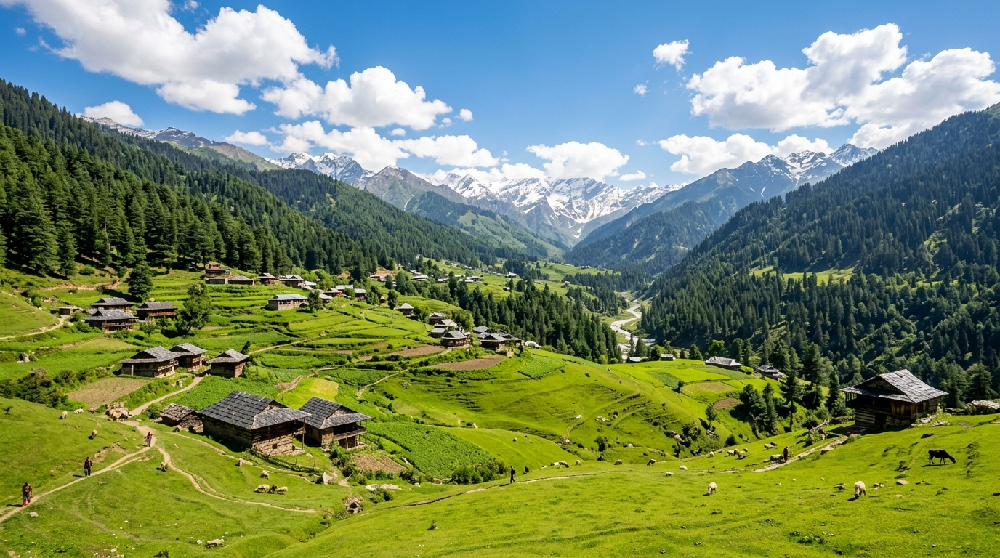
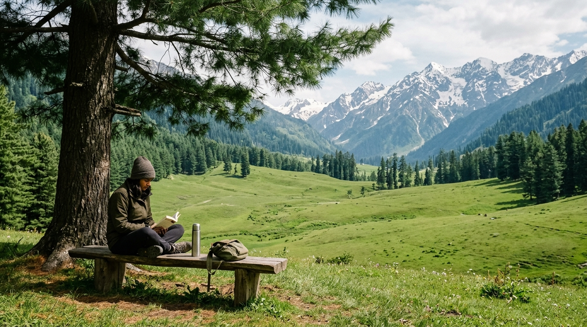
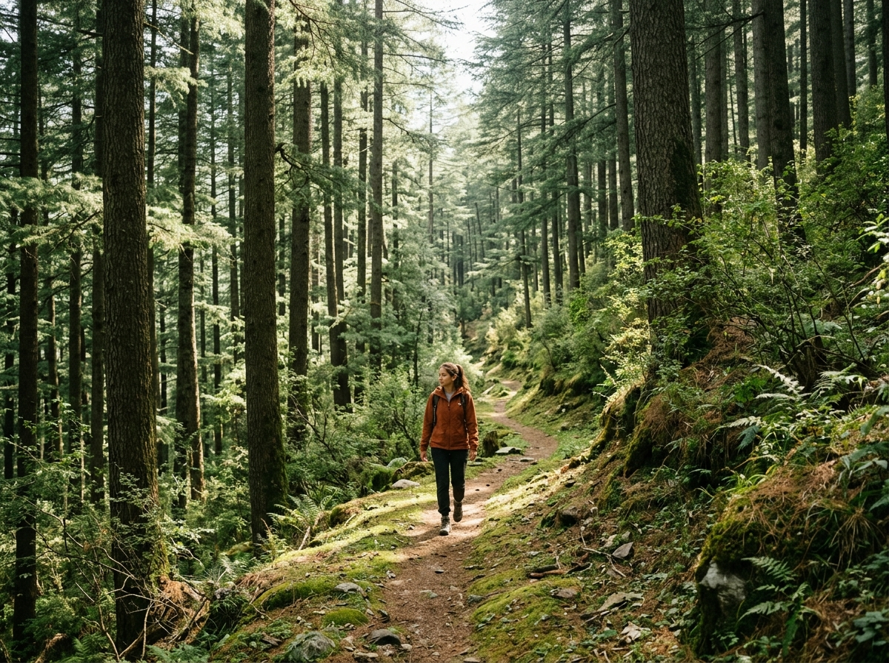
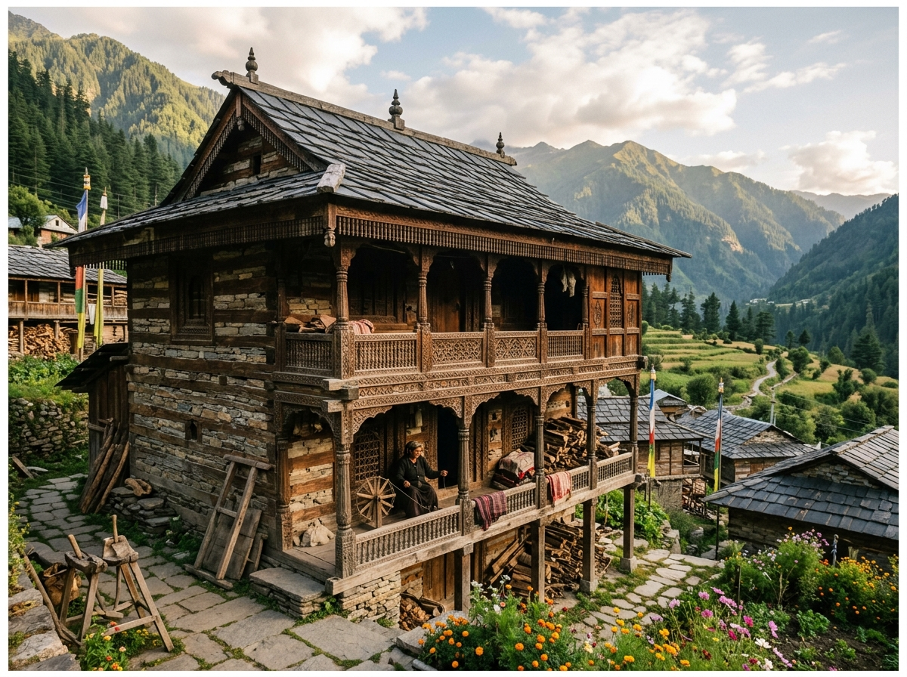
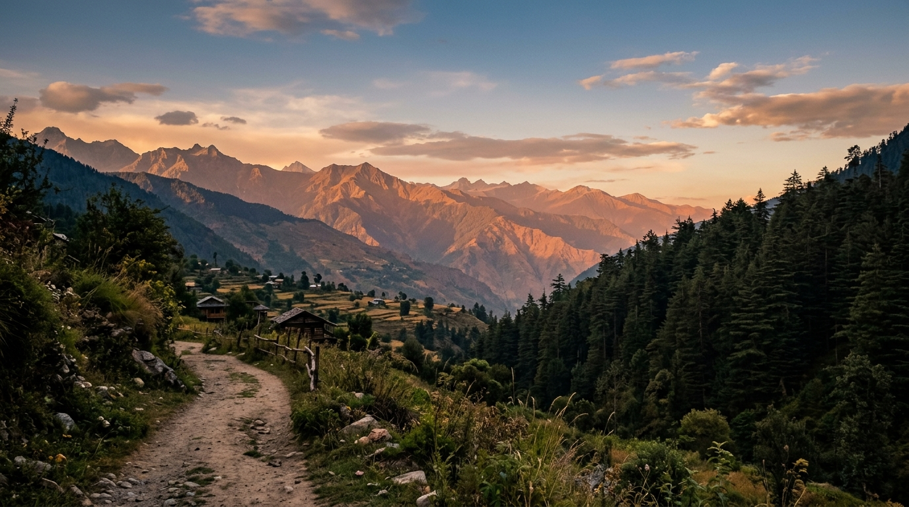

About Sainj Valley: What If Your Next Mountain Trip Was Actually Peaceful?
Let’s be honest—when was the last time a trip to the mountains actually felt like an escape?
You leave the city dreaming of fresh air, quiet roads and a cup of chai with a view. Then you arrive at a popular hill station and find traffic jams, crowded cafés, honking cars and people everywhere. 😄
You may even wonder, “Wait… wasn't I supposed to be escaping all this?”
Thankfully, there is still a quieter side to Himachal Pradesh.
Welcome to Sainj Valley.

Tucked away in the mountains, this beautiful offbeat destination in Himachal Pradesh feels wonderfully removed from the usual tourist rush.
And at its heart lies Shangarh—a breathtaking green meadow surrounded by pine forests, traditional Himachali homes and mountains stretching into the distance.
There are no flashy tourist streets demanding your attention. No need to rush from one attraction to another.
Just forests, open skies, mountain air and that rare feeling of having nowhere you need to be. ❤️
You might spend your morning wandering through the village, your afternoon sitting in Shangarh meadow with a book, and your evening watching the mountains turn golden.
And somewhere along the way, you realise:
“You didn't come here to see everything. You came here to feel something.”
If you're looking for hidden places in Himachal Pradesh, peaceful hill stations, offbeat Himachal destinations or a quiet Himalayan getaway, Sainj Valley deserves a place on your list.
How to Reach Sainj Valley 🚗
Now you're probably thinking:
“Sounds beautiful… but how do I actually get there?” 😄
Don't worry. Reaching Sainj Valley is quite manageable with a little planning—and the journey itself is part of the experience.

✈️ By Air
The nearest airport is Bhuntar Airport (Kullu–Manali Airport).
From there, you'll continue by road towards Sainj Valley. A local taxi is generally the most convenient option, particularly if you're travelling with luggage or family.
And don't spend the whole drive looking at your phone. Look outside! 📸
The winding mountain roads, forests and little settlements along the way are beautiful enough to become part of your holiday.
🚌 By Road
If you're a “give me a window seat and let the mountains do the talking” kind of traveller, travelling by road is a wonderful option.
You can travel towards Aut, an important road junction in Himachal Pradesh, by bus from cities such as Delhi or Chandigarh. From Aut, continue towards Sainj Valley by local bus or taxi.
Once you leave the main highway, the landscape begins to change. The traffic fades, the forests become thicker and the mountains slowly take over.
At some point, you'll probably look out of the window and think:
“How did I not know about this place before?” 😄
Travel Note
Tip: Check local bus and taxi timings before travelling and keep some extra time in your itinerary. Mountain roads don't always follow city schedules!
Best Time to Visit Sainj Valley 🌸🍂
The lovely thing about Sainj Valley is that every season gives it a different personality.

🌸 March to June — Green & Pleasant
If you love lush green meadows, flowers, pleasant weather and long walks, spring and early summer are wonderful.
Shangarh meadow becomes especially inviting, while the evenings still have that lovely mountain chill.
Basically—perfect weather for chai outdoors. ☕😄
Best for: Green landscapes, photography, village walks and exploring.
🍂 September to November — Clear & Peaceful
Autumn brings crisp mountain air, clearer skies and beautiful views.
After the monsoon, the landscape can look incredibly fresh, while the quieter atmosphere makes this a great time for travellers seeking peaceful Himalayan views and photography opportunities.
Best for: Photography, hiking, mountain views and peaceful escapes.
🌧️ July & August — Beautiful but Unpredictable
Monsoon transforms the valley into a deep shade of green. Streams come alive and the forests look freshly washed.
But heavy rain can also bring slippery trails, landslides and travel delays.
If you want a more predictable trip, consider avoiding the peak monsoon period. If you do visit, check local weather and road conditions before travelling.
❄️ Winter
Winter brings a quieter, colder version of Sainj Valley.
If you love chilly mornings, warm clothes and endless cups of chai, you may enjoy it very much. ☕❤️
For a first visit, March to June is excellent for greenery, while September to November is wonderful for clearer skies and mountain views.
Best Things to Do in Sainj Valley 🌿
Here's our first piece of advice:
Don't over-plan this trip. 😄
Sainj Valley isn't a place where you need to race around ticking attractions off a list.
Some of the best experiences are beautifully simple.

🌱 Relax in Shangarh Meadow
Find a peaceful spot in the famous Shangarh meadow and stay there for a while.
Read a book. Watch the clouds. Listen to the pine trees. Have a conversation.
Or do absolutely nothing.
Yes, doing nothing is allowed here. 😂
As the sun begins to set, the surrounding landscape takes on warm golden tones, and you'll understand why this place is so special.
Sometimes the best travel experience is the one where you don't do anything at all.
💦 Explore Forest Streams & Waterfalls
If you're the sort of person who sees a little forest trail and immediately thinks, “I wonder where that goes?”—you're going to enjoy Sainj Valley.
Quiet trails, streams and seasonal waterfalls can turn a simple walk into a little adventure.
Just remember that trails can become slippery after rain, so check local conditions before heading out.
🏡 Discover Himachali Architecture
Take a slow walk through the villages and look at the traditional Himachali wooden architecture.
Old temples and village structures reflect the region's craftsmanship, culture and traditions.
Don't just take a photograph and move on. Look at the details—the woodwork, the designs and the way these buildings blend naturally into the landscape.
If you visit a temple, respect local customs and ask before photographing people or ceremonies.


Easy Nature Walks in Sainj Valley 🌲🥾
Not everyone wants a difficult trek—and thankfully, you don't need to be an experienced trekker to enjoy the valley.
🌲 Pine Forest Walks
Walk beneath tall pine and oak trees and let the forest slow you down.
The air smells fresh, sunlight filters through the branches and birds replace the sound of traffic.
These gentle nature walks in Sainj Valley are less about covering distance and more about enjoying the moment.
⛰️ Short Uphill Walks
Want a little more exercise?
Try a short uphill walk around the surrounding ridges. As you climb, the view opens up to reveal forests, village homes and the green landscape around Shangarh.
And when you finally reach the viewpoint, you'll probably say:
“Okay… that was worth the climb.” 😄
Ask locals or your accommodation about trail conditions, wear comfortable shoes and carry water.
Mobile Network & Internet 📱
Before you completely disappear into the mountains, there's one very important question:
“Will my phone work?” 😂
Mobile connectivity can be available around populated parts of Shangarh and Sainj Valley, with Jio and Airtel often being useful options.
However, signal strength and data speeds can vary as you move into more remote areas.
If you're working remotely, check Wi-Fi and mobile connectivity with your accommodation before booking.
And maybe don't be too disappointed if the internet disappears occasionally.
Instead of scrolling, you'll be watching clouds.
Instead of notifications, you'll hear birds.
That's not bad connectivity.
That's a free digital detox. 🌿
Before travelling, download offline maps, save important contacts, complete essential online payments and carry a power bank.
Friendly Travel Tips 🎒
A few little things can make your trip much easier.
💵 Carry Cash
ATMs may be limited in remote areas, so carry enough cash for local transport, small shops and other expenses.
Trust us—you don't want to find the perfect little chai stop and then discover:
“Cash only.” 😅
🧥 Pack Layers
Mountain weather can change quickly. Carry a light jacket, sweater or warm shawl even if the afternoon feels warm.
Comfortable walking shoes are also a must if you're planning to explore.
🌿 Leave No Trace
Sainj Valley is beautiful partly because it hasn't been overwhelmed by commercial tourism.
Let's keep it that way.
Carry your waste with you, avoid disturbing wildlife and respect local villages, temples and natural spaces.
And please don't leave behind the classic mountain souvenir:
a plastic bottle sitting dramatically in the middle of a beautiful meadow. 😂
Take your photographs.
Take your memories.
Leave only footprints.

“Sometimes, the place you've been searching for is the quiet valley you almost didn't know existed.”
Conclusion: Your Soul's Next Favorite Destination ❤️🏔️
Some places you visit, photograph, tick off your list—and eventually forget.
Sainj Valley isn't quite like that.
Maybe it's the silence of the pine forests.
Maybe it's the endless green of Shangarh meadow.
Maybe it's a quiet morning with a cup of chai when you suddenly realise you haven't checked your phone for an hour.
Whatever it is, Sainj Valley has a way of slowing you down.
You don't come here for a packed itinerary.
You come here to breathe a little deeper, walk a little slower and remember what it feels like to have nowhere you need to rush to.
So, if you're tired of crowded hill stations and searching for an offbeat Himachal Pradesh destination, perhaps it's time to take the road less travelled.
Pack a warm jacket. 🧥
Keep some cash in your wallet. 💵
Charge your camera. 📸
And leave a little space in your itinerary.
Then head towards Sainj Valley and Shangarh.
Because sometimes, the place you've been searching for isn't the place everyone is talking about.
Sometimes, it's the quiet valley you almost didn't know existed. 🌿
And when you finally leave, don't be surprised if a little part of you is already thinking:
“When can I come back?” ❤️
Because some destinations give you photographs.
The special ones give you a feeling.
And Sainj Valley might just give you both. 🏔️✨